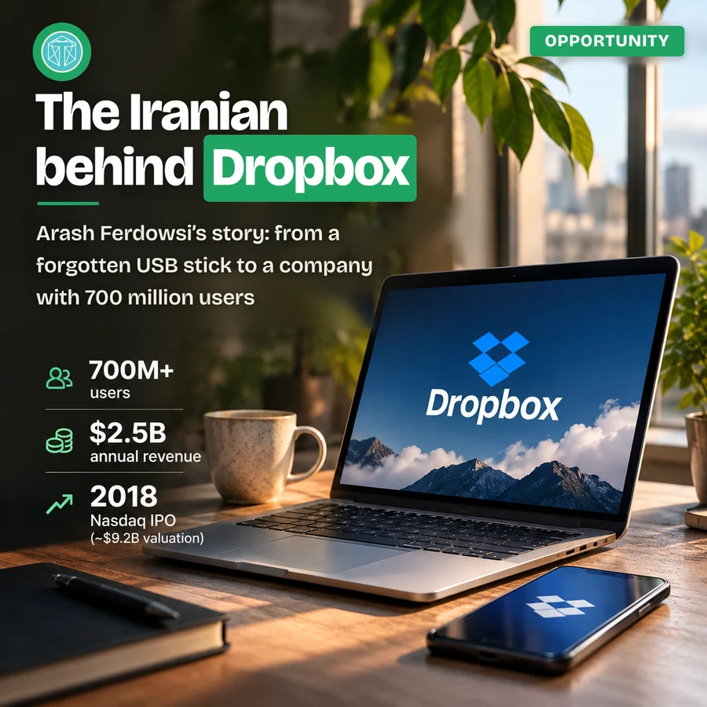

ایرانیِ پشتِ دراپباکس؛ آرش فردوسی و ابری که فایلهای جهان را نگه میدارد
The Iranian behind Dropbox: Arash Ferdowsi and the cloud that holds the world’s files
صنعت ذخیرهسازی ابری، داستان یک فلش جامانده، نه به استیو جابز، دراپباکس امروز و درسهایی برای استارتاپهای ایرانی
The cloud storage industry, the story of a forgotten USB stick, saying no to Steve Jobs, Dropbox today, and lessons for Iranian startups
هر بار عکسی را در گوشی ذخیره میکنید و بعد روی لپتاپ میبینیدش، یا فایلی را با یک لینک برای همکارتان میفرستید، از ایدهای استفاده میکنید که حدود ۲۰ سال پیش ساده به نظر نمیرسید. یکی از دو نفری که این ایده را به یکی از بزرگترین شرکتهای اینترنتی جهان تبدیل کردند، پسری از خانوادهای ایرانی بود: آرش فردوسی، همبنیانگذار دراپباکس.
در یک نگاه
- بازار جهانی ذخیرهسازی ابری در ۲۰۲۵ حدود ۱۳۷ میلیارد دلار بود و پیشبینی میشود تا ۲۰۳۴ به حدود ۵۰۰ میلیارد دلار برسد
- آرش فردوسی، فرزند پدری اهل تبریز، سال ۲۰۰۷ در ۲۱ سالگی دانشگاه MIT را در ترم آخر رها کرد تا دراپباکس را بسازد
- دراپباکس به یک پیشنهاد خرید «نُه رقمی» از استیو جابز نه گفت و سال ۲۰۱۸ با ارزش حدود ۹٫۲ میلیارد دلار وارد بورس شد
- امروز بیش از ۷۰۰ میلیون کاربر ثبتنامشده، حدود ۱۸ میلیون مشترک پولی و درآمد سالانهی حدود ۲٫۵ میلیارد دلار دارد
- درس بزرگش برای استارتاپها: یک مشکل روزمره را خیلی ساده حل کن، و کاری کن کاربرانت خودشان تبلیغت را بکنند
۱. فایلهای ما کجا زندگی میکنند؟
تا همین ۲۰ سال پیش، فایلها جای مشخصی داشتند: روی هارد کامپیوتر، یک فلاپی، یک سیدی یا یک فلش. اگر فلش را جا میگذاشتید، فایل هم جا میماند. خیلیها برای اینکه فایلی را در خانه و محل کار داشته باشند، آن را برای خودشان ایمیل میکردند.
ذخیرهسازی ابری این را عوض کرد. «ابر» در واقع کامپیوترهای بزرگی در مراکز داده است که فایل شما را نگه میدارند و هر وقت لازم باشد، روی هر دستگاهی که دارید به شما برمیگردانند. نسخهی گوشی، لپتاپ و تبلت همیشه یکی است؛ اسم این کار «همگامسازی» (sync) است.
امروز این صنعت یکی از پایههای اقتصاد دیجیتال است:
| شاخص | رقم |
|---|---|
| اندازهی بازار جهانی ذخیرهسازی ابری، ۲۰۲۵ | حدود ۱۳۶٫۸ میلیارد دلار |
| پیشبینی ۲۰۳۴ | حدود ۵۰۱ میلیارد دلار |
| رشد سالانهی پیشبینیشده | حدود ۱۵٪ |
| مشترکان پولی Google One، مه ۲۰۲۵ | بیش از ۱۵۰ میلیون |
منابع: IMARC Group و The Star / Reuters.
بازیگران اصلی
- زیرساخت ابری شرکتها: آمازون (AWS)، مایکروسافت (Azure)، گوگل و علیبابا
- ذخیرهسازی شخصی: Google Drive، iCloud اپل و OneDrive مایکروسافت؛ که معمولاً همراه گوشی یا سیستمعامل میآیند
- شرکتهای مستقل: دراپباکس و Box، که فقط کارشان همین است
پیشرانهای رشد هم روشناند: کار از راه دور، گوشیهایی که هر روز عکس و ویدیوی بیشتری میگیرند، و هوش مصنوعی که برای کار کردن به دادهی مرتب و در دسترس نیاز دارد.
۲. آرش فردوسی کیست؟
آرش فردوسی ۷ اکتبر ۱۹۸۵ در شهر اورلند پارک در ایالت کانزاس آمریکا به دنیا آمد. پدرش، غلام فردوسی، اهل تبریز است و مادرش، تهمینه فریدآذر، هم متولد ایران است. خانواده پس از انقلاب ۱۳۵۷ در آمریکا ماندند (Wikipedia).
آرش در دبیرستان دولتی Blue Valley Northwest شاگرد اول شد و سال ۲۰۰۴ وارد MIT شد تا مهندسی برق و علوم کامپیوتر بخواند. در ترم آخر، فقط چند ماه پیش از گرفتن مدرک، دانشگاه را رها کرد تا با درو هیوستون دراپباکس را بسازد.
۳. تولد دراپباکس: یک فلش جامانده
ماجرا از یک اتوبوس شروع شد. درو هیوستون، دانشجوی دیگر MIT، در سفری به نیویورک فهمید فلشش را جا گذاشته است. همانجا شروع کرد به نوشتن کد برنامهای که دیگر هیچوقت این مشکل را نداشته باشد (Sequoia Capital).
هیوستون برای ورود به شتابدهندهی معروف Y Combinator یک ویدیوی کوتاه از نمونهی اولیه ساخت. ویدیو دو روز در صدر سایت Hacker News ماند، ولی پل گراهام، بنیانگذار Y Combinator، به او گفت برای پذیرش به یک همبنیانگذار نیاز دارد. یک دوست مشترک، هیوستون را با آرش فردوسی آشنا کرد. آرش دانشگاه را رها کرد و هر دو پذیرفته شدند.
| سال | اتفاق |
|---|---|
| ژوئن ۲۰۰۷ | تأسیس دراپباکس؛ آرش مدیر ارشد فناوری (CTO) شد |
| پاییز ۲۰۰۷ | سرمایهگذاری اولیهی Sequoia Capital و انتقال به سانفرانسیسکو |
| ۲۰۰۸ | ویدیوی دوم: فهرست انتظار در یک روز از ۵ هزار به ۸۵ هزار نفر رسید |
| ۲۰۰۸ | عرضهی عمومی؛ برنامهی معرفی دوستان، کاربران را در ۱۰ روز از ۱۰۰ هزار به ۲۰۰ هزار رساند |
| ۲۰۰۹ | ۳ میلیون کاربر؛ نه به پیشنهاد استیو جابز |
| ۲۰۱۱ | ۵۰ میلیون کاربر |
| ۲۰۱۶ | آرش از سمت CTO کنار رفت |
| مارس ۲۰۱۸ | ورود به بورس نزدک با ارزش حدود ۹٫۲ میلیارد دلار |
| ۲۰۲۰ | آرش از دراپباکس جدا شد |
راز رشد: کاربرانی که خودشان تبلیغ میکردند
دراپباکس تقریباً پولی برای تبلیغ نداد. فکرش ساده بود: هر کس دوستی را دعوت کند، هم خودش و هم دوستش فضای رایگان بیشتری میگیرند. این ایده که از برنامهی پیپال الهام گرفته بود، رشد را یکشبه دو برابر کرد. ویدیوی دوم هم پر از شوخی و «اشارههای پنهان» برای کاربران Digg و Reddit بود و دستبهدست شد.
حتی شکست هم بخشی از داستان است: در نمایش زندهی سال ۲۰۰۸ در کنفرانس TechCrunch، فایل همگام نشد، چون وایفای سالن قطع شده بود. بنیانگذاران ادامه دادند.
۴. نه به استیو جابز
در دسامبر ۲۰۰۹، استیو جابز هیوستون و فردوسی را به دفترش در کوپرتینو دعوت کرد. اپل پیشنهاد خریدی «نُه رقمی»، یعنی صدها میلیون دلار، داد. به گزارش فوربز، جابز وقتی هیوستون خواست نمایش لپتاپش را شروع کند، گفت: «میدانم چه کار میکنید.» به گفتهی گزارشها، به آنها گفت اپل وارد بازارشان میشود (TechCrunch).
دو بنیانگذار جوان نه گفتند. اپل سال ۲۰۱۱ سرویس iCloud را معرفی کرد، ولی دراپباکس نهتنها نابود نشد، بلکه هفت سال بعد با ارزشی بیش از ۹ میلیارد دلار وارد بورس شد.
۵. دراپباکس امروز
| شاخص | رقم |
|---|---|
| درآمد فصل سوم ۲۰۲۶ | ۶۳۷٫۳ میلیون دلار |
| درآمد سالانهی تکرارشونده (ARR) | ۲٫۵۵۵ میلیارد دلار |
| مشترکان پولی | ۱۸٫۲ میلیون |
| میانگین پرداخت هر مشترک در سال | حدود ۱۳۹ دلار |
| حاشیهی جریان نقد آزاد | ۳۹٫۵٪ |
| کاربران ثبتنامشده | بیش از ۷۰۰ میلیون |
| مشتریان تجاری | حدود ۵۰۰ هزار |
| ارزش بازار، اکتبر ۲۰۲۶ | حدود ۸٫۲ میلیارد دلار |
منابع: Dropbox، نتایج فصل سوم ۲۰۲۶، Sequoia Capital و StockAnalysis.
دراپباکس امروز شرکتی بسیار سودده است: از هر ۱۰۰ دلار درآمد، حدود ۴۰ دلار پول نقد آزاد میسازد. ولی رشدش تقریباً متوقف شده؛ درآمد فصل سوم فقط ۰٫۵٪ بیشتر از سال قبل بود. دلیل اصلی رقابت با غولهایی است که فضای ذخیره را همراه گوشی، ایمیل و سیستمعامل تقریباً رایگان میدهند. حالا دراپباکس روی ابزارهای هوش مصنوعی برای جستوجو و سازماندهی کار شرط بسته است.
۶. دراپباکس چه بازاری ساخت؟
- فایل همهجا: پیش از دراپباکس، همگامسازی کار متخصصان بود. دراپباکس آن را به یک پوشهی ساده روی دسکتاپ تبدیل کرد که «فقط کار میکرد»
- مدل فریمیوم: ۲ گیگابایت رایگان، و پرداخت برای فضای بیشتر. این مدل بعدها الگوی صدها سرویس نرمافزاری شد
- رشد با معرفی کاربران: برنامهی «دوستت را دعوت کن» یکی از معروفترین نمونههای رشد ویروسی در تاریخ استارتاپهاست
- کار از راه دور: اشتراک یک پوشه با تیم، پیشزمینهی کار گروهی ابری امروز بود
- رقابت غولها: موفقیت دراپباکس گوگل، اپل و مایکروسافت را وادار کرد سرویسهای خودشان را بسازند و کل بازار را بزرگتر کرد
۷. درسهایی برای استارتاپهای ایرانی
- از مشکل خودت شروع کن: دراپباکس از یک فلش جامانده شروع شد، نه از یک طرح تجاری
- سادگی، محصول است: کاربر نباید بفهمد پشت صحنه چه میگذرد
- کاربرت تبلیغت را میکند: اگر محصول خوب باشد، یک انگیزهی کوچک کافی است تا دستبهدست شود
- همبنیانگذار مهم است: Y Combinator بدون همبنیانگذار، هیوستون را نمیپذیرفت
- گاهی باید نه گفت: پیشنهاد بزرگ امروز، همیشه بزرگترین ارزش فردا نیست
تحلیل دیتومان
داستان آرش فردوسی فقط داستان یک میلیاردر نیست. داستان پسری است از خانوادهای تبریزی که در ۲۱ سالگی، چند ماه پیش از مدرک گرفتن از MIT، روی یک ایدهی ساده شرط بست و در ساختن ابزاری سهیم شد که صدها میلیون نفر هر روز از آن استفاده میکنند.
استعداد ایرانیها، هر جای دنیا که باشند، بارها خودش را نشان داده است. همین استعداد امروز در خود ایران هم هست: در برنامهنویسها، مهندسها و تیمهای کوچکی که با منابع کم محصول میسازند. اگر به بازار جهانی و سرمایه وصل شوند، آرش فردوسیهای بعدی میتوانند از همینجا بیرون بیایند.
شما فکر میکنید کدام مشکل روزمرهی ما ایرانیها میتواند ایدهی دراپباکس بعدی باشد؟
بیشتر بخوانید
منابع
- Wikipedia: Arash Ferdowsi
- Sequoia Capital: Crucible Moments, Dropbox
- TechCrunch: Dropbox said no to a nine-digit offer from Apple (2011)
- Dropbox: Third quarter 2026 results (Business Wire via Morningstar)
- StockAnalysis: Dropbox market cap
- IMARC Group: Cloud storage market statistics
- Reuters via The Star: Google One hits 150 million subscribers (May 2025)
آخرین بازبینی: ۵ آذر ۱۴۰۵. زندگینامه از منابع عمومی، داستان تأسیس از گفتوگوی Sequoia Capital با بنیانگذاران، و رقمهای مالی از گزارش رسمی فصل سوم ۲۰۲۶ دراپباکس بررسی شد. اندازهی بازار، برآورد یک مؤسسهی پژوهشی است. بخش تحلیل، ارزیابی دیتومان است.